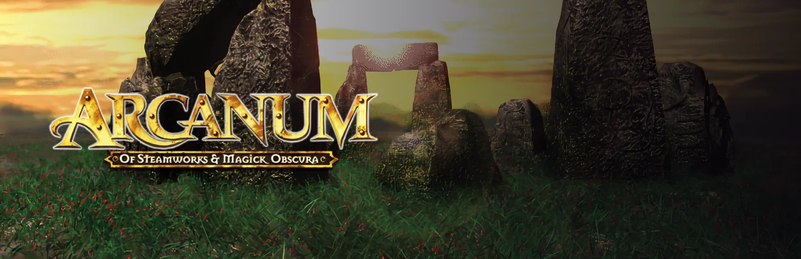

Arcanum closed the instant I pressed play

I installed Arcanum, pressed play, and got nothing at all. No window, no error, no crash box. Just the library sitting there as if I had not clicked. I had fixed this game before, years ago, on a different distro, which made it feel personal.
GOG ships this one with a compatibility wrapper, a graphics library that makes a 2001 game behave on modern Windows by reaching deep into the system’s own internals. Clarity has a rule about those: if a game ships its own copy of a library, give the game its copy, because otherwise Wine quietly substitutes its own and the thing never runs. That rule is the reason Quake and Resident Evil 2 work here at all.
This time the rule was the murderer. That reach into the internals is exactly what cannot survive under Wine, so by handing Arcanum the library it shipped with, Clarity was killing it before a window could appear. I measured it both ways, same prefix, same Proton build: with the shipped wrapper, no window at all in 26 seconds. With Wine’s own, a window for 22 of them, and the game playing.
So a fix can now name a library that has to stay the runtime’s, and Arcanum is the first game that keeps Wine’s. Nothing is deleted, nothing is configured, and the wrapper’s own settings file is left exactly where GOG put it.
Then the part I am less proud of. Chasing this, I found that the per-game fixes were never being loaded at all. The code that applies them referenced a list it never actually imported, and both places that call it sit inside a safety net that swallowed the error and logged a polite “skipped”. So every named fix on the fixes page had quietly been doing nothing in that path, OutRun 2006 and Resident Evil 2 included, and 1.16.0 shipped exactly like that. One missing line. It usually is.
That line is back, which means the fixes on this site are running for the first time in a while, and Arcanum proves it: launched through the real thing, a window for 29 of 32 seconds, where before there was none.